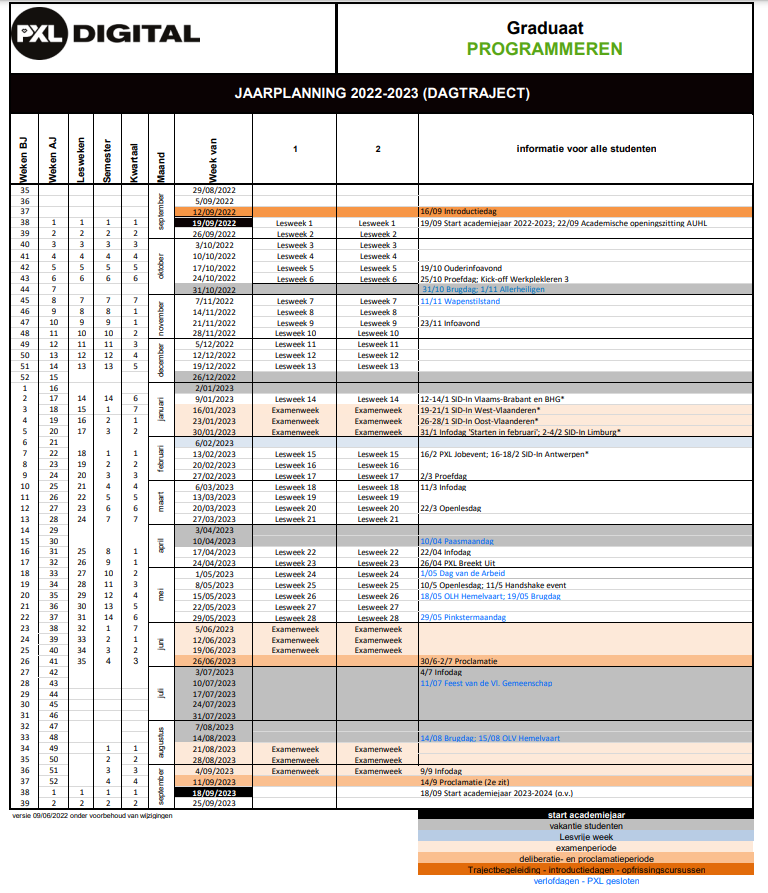

Waarom heb ik voor de richting graduaat programeren gekozen?
ik heb voor de richting graduaat programmeren gekozen omdat de richting mij wel leuk leek om te doen en omdat ik ook zeer graag in de IT zou
willen gaan werken en mijn familie zien mij ook echt in de IT werken en het lijkt niet alleen iets voor mij ik denk ook dat het echt iets is
voor mij om in de IT te werken, maar waarom programmeren. ik heb deze specifiek deze richting gekozen omdat ik heel graag bezig zou willen zijn
met de code zichzelf en from en of back-end zou kunnen werken en dit is de reden waardoor ik heb gekozen voor het graduaat programmeren
Waarom denk ik dat dit beroep bij mij past?
waarom denk ik dat dit beroep bij mij past omdat ik zeer geïnteresseerd om verder te gaan in de IT en ik zou zeer graag zelf ook willen in dit
beroep willen werken en het zou wel goed bij mij passen omdat ik graag code schrijf en zeer veel werk zin in de IT heb want ik heb ook echt plezier
met coderen en ik vind het ook niet erg om enkele uren te zitten coderen omdat ik er plezier in heb en daarom denk ik dat dit beroep goed bij mij zal passen
omdat ik er echt plezier in heb
Logboek

Competenties programmeur
Ontwerper
Waar sta je momenteel?
ik sta momenteel nog aan het begin ervan en ik ben het nog aan het leren
Wat lukt je al goed?
kijken of het haalbaar is benik nog wel wat degelijk in en voorstellen voor een standaard
kijken op grote wijze welke programmeertaal zoals html voor website en c#voor backend
Wat lukt je nog niet?
voorstellen welke programmeertaal echt het beste zou zijn zoals bv java of c#
en methodiek kan soms nog wel wat moeilijk zijn
Programmeur
Waar sta je momenteel?
ik sta momenteel nog aan het begin ervan en ik ben het nog aan het leren
Wat lukt je al goed?
ik kan wat methodiek soms
ik probeer mijn infrastructuur zo simpelmogelijk te houden
ik hou mij altijd aan de afspraken binnen een project
Wat lukt je nog niet?
methodiek kan soms moeilijk zijn
onderhoud kan soms een beetje tegenvallen want ik bug fix ka errors maken soms
Tester
Waar sta je momenteel?
heb ik alleen tests gedaan op mijn eigen projecten of een groeps project/li>
Wat lukt je al goed?
ik kan degelijk weel herhaling doen
Wat lukt je nog niet?
soms kijk ik over bugs
Communicator/Teamspeler
Waar sta je momenteel?
ik communiceer redelijk veel met mijn team en kijk hoe ver we zijn en wie wat het best kan
Wat lukt je al goed?
ik kan goed samen werken en communiceer en raporteer veel
Wat lukt je nog niet?
ik ben nit de beste in documenteren
Levenslang lerende IT-Professional
Waar sta je momenteel?
ik sta momenteel nog aan het begin ervan en ik ben het nog aan het leren
Wat lukt je al goed?
ik probeer persoonlijke groei te hebben en dat lukt oook wat
ik hou rekening met privacy en veiligheids regels
Wat lukt je nog niet?
ik heb geen hoge deskundigheidsniveau voor nu